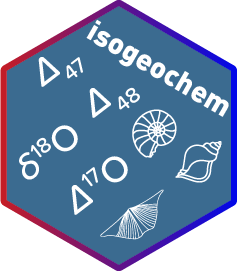

Changelog
Source:NEWS.md
isogeochem 1.1.0
Function updates
- a18_c_H2O(temp = 25, min = “dolomite”, eq = “Muller19”) Can now calculate the dolomite/water 18O/16O fractionation factor.
- a18_CO2acid_c(temp = 25, min = “dolomite”) Can now calculate the dolomite/CO2 18O/16O AFF.
- a18…() functions now return meaningful errors.
- d17O_c(D17O_H2O = 0.025) Can now take into account a non-zero D17O value for the ambient water.
- mix_d17O(step = 20) was overhauled. It now allows D17O values as input and specifying the resolution of the output. The output of the function now returns the d17O values as the fourth element in the data frame.
isogeochem 1.0.8
The first CRAN release
Misc
- Vignettes reset to the user’s parameters and options
- Updated DOI links
- Readme updates
- Added webpage https://davidbajnai.github.io/isogeochem/
isogeochem 1.0.7
New functions
- a18_CO2g_H2O()
- a18_CO2aq_H2O()
- a18_CO3_H2O()
- a18_HCO3_H2O()
- a13_CO2g_CO2aq()
- X_absorption()
- X_DIC()
Function updates
- Update to temp_D48() i: the curve_intersect() part was slimmed down
- Update to temp_D48() ii: temperatures are now calculated with the “Fiebig21” eq
- Added the “Anderson21” option to D47() and temp_D47()
- temp_D47() and temp_D48() both result in a similar data frame (length = 2) if errors are specified
- temp_D47(), temp_D48(), and temp_d18O() are optimize-d
- Added the “Kim07” eq to “aragonite” in a18_c_H2O()
- Added the “vanDijk18” eq to “siderite” in a18_c_H2O()
- Typo corrected in a18_H2O_OH(): “Z21-X3LYP” —> “Z20-X3LYP”